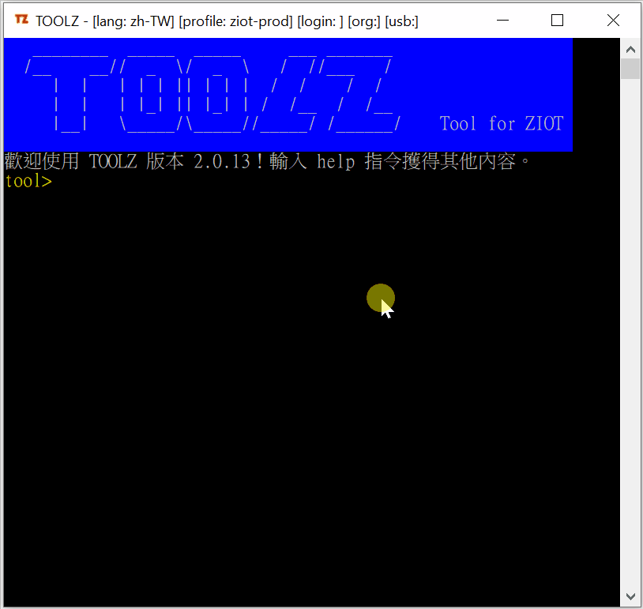

開始使用
2019-12-03
開啟 tool.exe
開啟 toolz，你可以用下列任何一個方式:
-
在 File Explorer，雙擊
tool.exe
-
在 Command Prompt 中，在存放 toolz 目錄路徑下，輸入 tool 後回車。例如:
C:\toolz> tool
正常的情況會出現以下類似畫面：
Note
如果出現問題，很大情況是安裝「前提」沒預備好，或是配置檔 config.json 出現問題。
Note
開啟 toolz 及一般執行時是不需要 micro USB 數據線 或 Basebox。
只有當使用與 Basebox 通訊的相關的命令時，才需要接上數據線及 Basebox。
介面
Title bar
toolz 程式的的標題欄 (title bar) 會顯示當前用戶執行狀態訊息。狀態訊息會因設定，及當前工作而異。
狀態訊息包括下列內容:
| 訊息標籤 | 訊息意義 | 說明 |
|---|---|---|
[lang] |
用戶選用的語言 | zh-TW: 中文繁體;zh-CN: 中文簡體;en-US: 英文; |
[profile] |
當前選用的服務器 profile 名稱。 | 大多數用戶只有一個 Profile |
[login] |
當前登入 profile 的用戶身份。 | login 的值為空時，表示目前仍未登入。 |
[org] |
當前登入 profile 中的那個組織的簡稱。 | org 的值為空時，表示目前仍未登入。 |
[usb] |
當前已選用的 USB 端口。 | usb 的值為空時，表示目前仍未選用任何端口。 |
Logo bar
明顯地顯示 toolz 的標識。
Welcome message
歡迎詞 (Welcome message) 反映目前 toolz 的版本號。
Prompt
提示行 讓用戶知道目前在哪個模組之下，以及讓用戶輸入命令。
開始
在 toolz 中，如果不知有什麼可用命令，就只管輸入 help。
動畫: 輸入 help
離開
在 toolz 中，如果要離開，輸入命令 quit。系統會要求你再確定是否離開，確定請輸入 y，取消請輸入 n。
動畫: 輸入 quit

Warning
Windows 中，ctrl+C 可關閉當前程序。但不建議這樣作為正常的離開操作。
通用命令
toolz 把不同的命令組織成不同的模組中。通用命令 是指在不同模組中均可用的命令。
| 通用命令 | 說明 |
|---|---|
cd |
轉換模組。例如 cd usb 轉換到 usb 模組， cd .. 轉換到根模組。 |
clear |
清空介面上的已執行內容。 |
help |
顯示當前模組的幫助文檔內容，可用的命令清單。 |
quit |
離開 toolz 。 |
模組
toolz 把不同的命令組織成不同的模組中。模組包括 1 個根模組及 4 個子模組。
在不同的模組下，Prompt (提示行) 的顯示亦會不同。
| 模組 | Prompt | 說明 |
|---|---|---|
| 根模組 | tool> | 進入toolz的第一個模組。 |
| languages 模組 | tool languages> | 與介面語言相關的操作。 |
| profiles 模組 | tool profiles> | 與服務器配置相關的操作。 |
| workspace 模組 | tool workspace> | 與配置檔相關的操作。 |
| usb 模組 | tool usb> | 與 usb 和 basebox 相關的操作。 |
快速使用指南
設定 WiFi
描述在已經安裝好程序的 Basebox 中，以 toolz 設定 WiFi 連線的步驟。
更新 tool.exe
描述 toolz 更新的步驟。